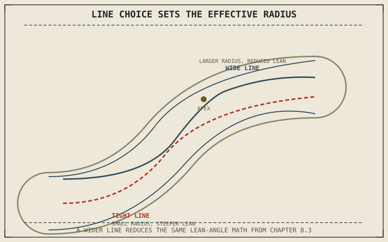

Chapter 8.3 calculated the lean angle a given speed and turn radius require, treating the turn radius as a fixed input. In real riding, the turn radius isn't fixed at all — it's a choice, set by exactly where a rider positions the motorcycle across the width of the road or lane, and that choice changes everything Chapter 8.3 and Chapter 8.4 calculated for a given corner.
Chapter 9.4 closed by naming cornering lines and vision as this chapter's subject, setting up the trail-braking technique that follows in Chapter 9.6. This chapter covers that subject.
The Line Sets the Radius the Physics Actually Sees
A classic cornering line — entering wide, using the full width of the lane to cut toward the inside at the corner's midpoint (the apex), then drifting back out wide on exit — isn't a stylistic choice or a racing affectation. It maximizes the effective radius of the curved path the motorcycle actually travels, compared to simply following the geometric centerline of the road tightly through the same corner. Chapter 8.3 established that required lean angle and centripetal force both shrink with a larger effective radius at a given speed, so a wider, straighter line through the same physical curve reduces the lean angle and grip demand Chapter 8.3's own math would otherwise calculate for a tighter path — a rider can take the same corner at the same speed with meaningfully less lean and less grip drawn from the friction circle simply by choosing a better line.
Vision: Looking Where the Line Actually Goes
A rider's eyes and head naturally guide the bike's actual path, in ways well beyond conscious steering input — looking through a corner toward the exit, rather than down at the road immediately in front of the wheel, tends to produce a smoother, more accurate line that matches the wide-entry, apex, wide-exit path this chapter just described. Looking too close in front of the bike, or worse, fixating on a hazard rather than the intended path, measurably degrades line accuracy, since the rider's steering and body-position inputs from Chapter 9.1 tend to follow where attention is actually directed rather than where it's consciously intended to go.
The line a rider chooses through a corner directly sets the effective turn radius Chapter 8.3's centripetal force math depends on — a wider, straighter line through the same physical curve genuinely reduces the lean angle and grip demand that corner requires at a given speed.

A corner shown with a tight, road-hugging line compared against a wide entry, apex, wide-exit line, with the wide line's larger effective radius and correspondingly reduced lean angle labeled against the tight line's smaller radius and steeper lean.
Adjusting the Line for What's Actually Visible
A blind corner, where the road's continuation beyond the apex isn't visible from the entry, calls for a delayed apex — turning in later and tighter than the classic line this chapter described, keeping the motorcycle positioned to see farther around the curve before committing to the tighter, faster part of the path. This is a direct, practical trade-off against the reduced lean angle the classic line otherwise provides: sacrificing some of that geometric advantage in exchange for the ability to see, and react to, whatever the corner's continuation and vision actually reveal before it's too late to adjust.
A Common Misconception, Cleared Up Early
It's tempting to treat cornering lines purely as a racing or performance concept, irrelevant to ordinary road riding where speeds are lower and margins are wider. The physical relationship Chapter 8.3 established between radius, lean angle, and grip demand applies at any speed, not just racing speed — a wider, smoother line through an everyday corner still genuinely reduces the lean angle and grip that corner demands, and blind-corner vision considerations matter more, not less, on public roads where oncoming traffic and unpredictable hazards are a real possibility a closed racetrack doesn't share.
Where This Leads
With line and vision established, this part can now cover trail braking as an actual technique — how a rider combines the braking skills from Chapters 9.3 and 9.4 with the cornering line this chapter just described. Chapter 9.6 turns to that combination directly.
Key Concepts to Remember
- A cornering line directly sets the effective turn radius Chapter 8.3's centripetal force math depends on, changing required lean angle and grip demand at a given speed.
- Looking through a corner toward the exit, rather than close in front of the wheel, tends to produce a more accurate line matching the intended path.
- A blind corner calls for a delayed apex, trading some of a wide line's geometric advantage for the ability to see farther around the curve before committing.
Cross-References
| ← Ch. 8.3 | Established the relationship between turn radius, speed, and required lean angle; this chapter shows a rider directly manipulating that radius through line choice. |
| ← Ch. 9.1 | Established body position as a rider input the machine responds to; this chapter shows vision and head position guiding that same input. |
| → Ch. 9.6 | Covers trail braking in practice, combining this chapter's line and vision with the braking technique from Chapters 9.3 and 9.4. |